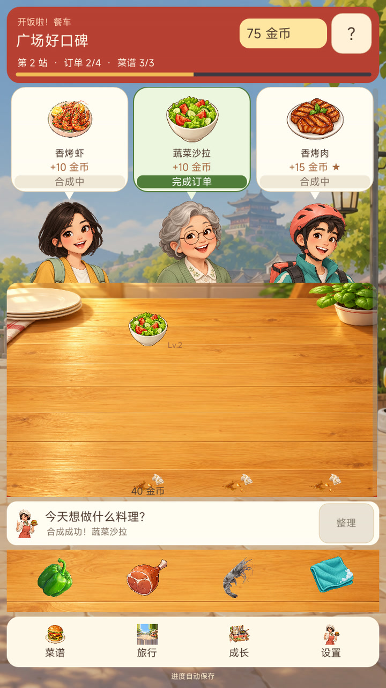
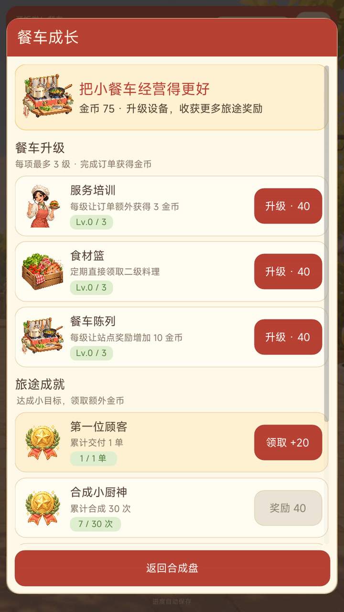
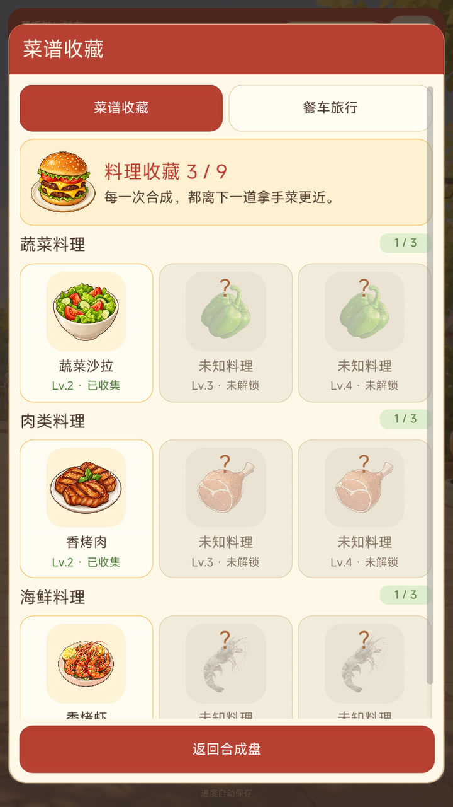
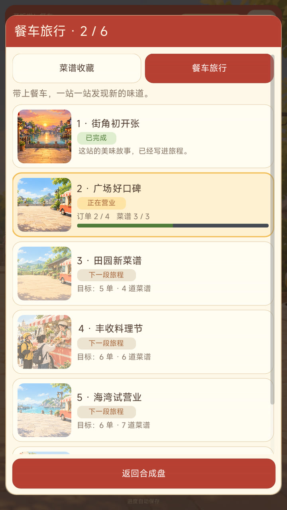

从表格式棋盘变成餐桌
新版把合成盘表现为木质餐桌，顾客位于桌后，订单显示在头顶气泡。食材、料理和人物在同一画面里建立对应关系，减少在多个区域间寻找信息。
TAPTAP MAKER / 个人 AI 游戏实践
把同类食材合成料理，完成顾客头顶的图文订单，再用收入扩建餐桌、升级餐车。竖屏新版让经营发生在一张有顾客、有污渍的木桌上。
GAMEPLAY / 核心体验
免费领取蔬菜、肉类和海鲜原料，将同类同级食材合并为更高级料理。按顾客订单交付餐品获得金币，再解锁桌面位置、购买成长升级，并推进六个旅行站点。每条食材链共四级，形成九道进阶料理；没有营业倒计时，玩家可按自己的节奏整理桌面。
IN-GAME CAPTURES / 游戏画面
四张图来自竖屏新版真实引擎画面，由 688×1224 采集帧导出为 720×1280，并非实体手机截图。




DESIGN / 规则与取舍
新版把合成盘表现为木质餐桌，顾客位于桌后，订单显示在头顶气泡。食材、料理和人物在同一画面里建立对应关系，减少在多个区域间寻找信息。
餐桌从 12 格扩展到 16 格，通过抹布擦除污渍逐步开放位置。整理操作支持立即撤销，让腾挪食材保留试错空间。
第二站起加入双料理订单与站点特色奖励。六站推进门槛累计需要完成 32 单，通关后可以自由经营；这些门槛不等于只有 32 条固定订单。
三类升级各有三级，菜谱收藏、旅行进度和四项成就分别记录短期与长期目标。成长页面把升级成本、当前效果与下一步放在一起，支持玩家安排收入。
MY PRACTICE / 项目推进
将原 Unity 餐车项目适配到 TapTap Maker，围绕合成、订单、经营成长和旅行推进整理系统闭环。通过 AI 协作迭代横屏到竖屏的布局，明确顾客气泡、无框摆菜、清理扩容、大图入口与多种屏幕比例下的阅读要求；两个 Maker 工程在作品集中合为一款。
原应用已有公开入口；竖屏新版已构建并备好截图和动态视频，平台迁移及审核结果尚待确认。这里展示本地竖屏新版，TapTap 入口指向原应用。
TAPTAP / 游戏入口
TapTap 页面提供公开介绍与平台支持的试玩入口。平台当前可玩的内容以该页面为准，本页同时记录开发中的后续迭代。